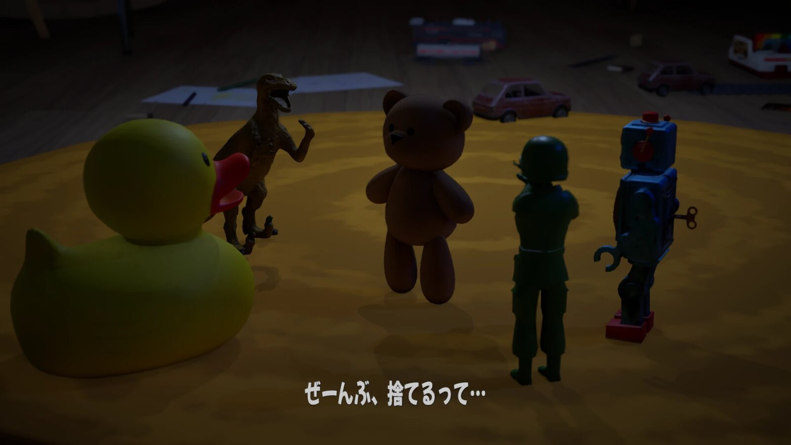
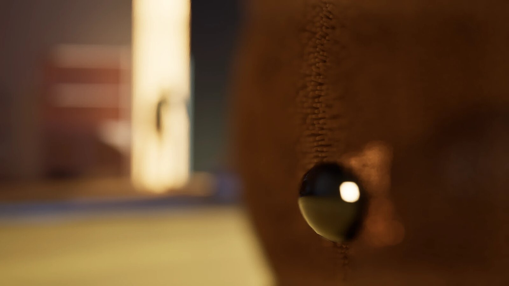
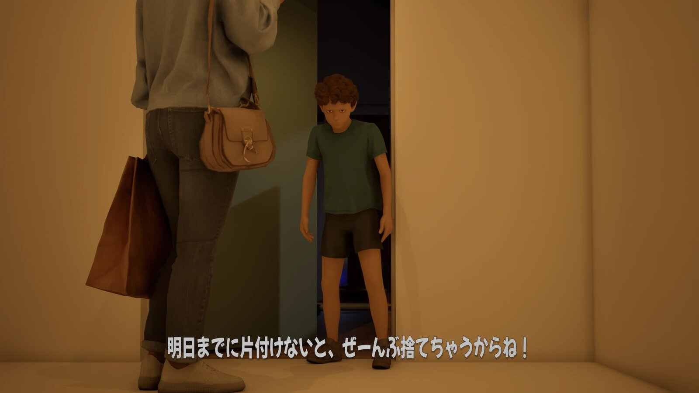

UE5.8 / C++
Toy or Not ?
凝視されたら動けない。人間とおもちゃの非対称オンライン対戦です。おもちゃは電池を集め、捕まった仲間を助けながら脱出を目指します。人間はおもちゃを見つけて箱にしまいます。
- 開発
- 3人チーム ／ 2026年9月から制作中
- 担当実装
- 寸劇とタイトル、観戦テレビ、画面比の判定、ボイスチャット、開発フロー
- 公開状況
- Steamストア公開中 ／ 2027年2月発売予定
寸劇からタイトルへ
遊ぶ前におもちゃたちの事情が伝わるよう、Sequencerで寸劇を作りました。暗転からテディの目のアップを経てタイトルへつなぎます。タイトルでおもちゃをクリックすると踊りが変わります。


寸劇を見せたときに「吹き出しは見づらい」という感想がありました。セリフを字幕に移して大きさを調整し、扉が閉まる「バタンッ」だけは大きな描き文字で残しました。

コードを読むTBTitleGameMode.cpp ・ TBTitleStory.h ・ TBTitleEmote.cpp
捕まった後は、テレビで観戦
捕まった仲間同士で試合を見ながら待てるよう、おもちゃ箱に子ども用のテレビを置きました。大きなリモコンに乗って、みんなで観戦するチャンネルを替えられます。

観戦映像を共有するためにサーバーが同期するのはチャンネル番号だけです。映像は各端末で描画し、おもちゃ箱の外にいるプレイヤーの端末では描画しません。
コードを読むTBBoxTV.cpp ・ TBTVRemote.cpp ・ TBTVButton.cpp ・ TBTVCamera.h
画面比で勝負が変わらないように
横長のモニターを使う人だけが広く見えて有利になる、という不公平をなくしたいと考えました。
作品全体はリッスンサーバー方式で、対戦の審判はサーバーが担います。その中で私が担当した JudgeHalfAngles では、凝視の判定に使う画面比の上限を16:9にし、端末から届く画面比は判定範囲を狭める方向にだけ使います。画面比は端末が送る値なので、広げる方向に使うと、嘘の値で得ができてしまうからです。
声で距離と役柄を伝える
ボイスチャットは相手との距離で音量が下がり、箱越しには声がこもります。人間とおもちゃで声の高さが変わるよう、ピッチシフトを自作しました。
コードを読むTBVoiceComponent.cpp ・ TBPitchShift.cpp
担当範囲と開発フロー
担当したC++は約1万4千行、作品の自動テストは約190本です。AIのコーディング支援を使い、仕様と仕組みは自分で決めました。
PRの前に /quiz で変更内容についての4択問題に3問答えます。合格しないとpushできず、GitHub Actionsでも合格記録を確認します。
コードを読むquiz.yml